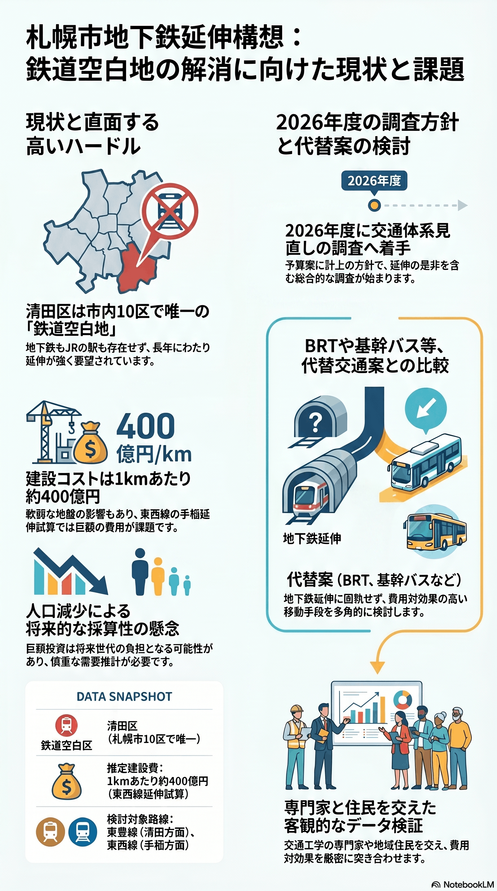

地下鉄延伸構想（清田・手稲方面）と交通体系の見直し
鉄道空白地の延伸要望に対し、巨額の建設費と人口減が壁となる。

背景
清田区は市10区で唯一、地下鉄もJRの駅もない鉄道空白区で、東豊線の清田方面への延伸が長年要望されてきた。東西線の手稲区への延伸要望もある。路線バスの減便・運転手不足を背景に、市は2026年度に地下鉄延伸を含む交通体系見直しの調査へ着手する方針を示した。清田延伸は2001年の市審議会答申で構想され（福住〜清田 約4.2km・4駅）、概算工事費は2011年度調査で約853億円とされたが、採算性や「開業30年で黒字化」という国の認可目安を理由に2011年に市が「困難」と説明し、長く停滞してきた。一方で建設費は1kmあたり約400億円規模ともされ、人口減局面での採算性が大きな壁となる。
主要データ
| 鉄道空白区 | 清田区（市10区で唯一） |
|---|---|
| 清田延伸の概算工事費 | 約853億円（2011年度調査・福住〜清田 約4.2km/4駅）。2001年答申では約1,050億円 |
| 延伸建設費の目安 | 1kmあたり約400億円（東西線手稲延伸の試算） |
| 調査着手 | 2026年度予算案に計上の方針 |
| 手稲延伸の民間試算（2026年6月） | 宮の沢から西へ約6km・2駅増設、総額約2,080億円で30年黒字化（期成会・北海道科学大の試算。市の試算ではない・要確認） |
事実
- 清田区は札幌10区で唯一、地下鉄・JRの駅がない区で、東豊線の清田方面延伸が長年要望されている。
- 東豊線の清田延伸は福住駅から清田駅までの約4.2km・4駅（札幌ドーム・東月寒・北野・清田）で構想され、概算工事費は2011年度調査で約853億円（2001年の市審議会答申では約1,050億円）とされる。
- 清田延伸は、バブル崩壊後の採算性重視や「開業30年で黒字化」という国の認可目安を理由に2011年に市が「困難」と説明し長く停滞したが、2022年に国土交通省が国会で「30年は一応の目安で、地方の公営交通には柔軟に対応している」と答弁し、市は再検討へ動いた。
- 路線バスの減便・運転手不足を受け、札幌市は2026年度に地下鉄延伸を含む交通体系見直しの調査に着手する方針を示した。
- 東西線の手稲区延伸も要望されているが、泥炭地で地盤が弱く、1kmあたり約400億円規模の建設費が課題とされる。
- 【2026年6月追記】東西線手稲方面延伸を求める期成会と北海道科学大学が、高架方式とガラス繊維製シェルターで線路・駅を覆う構想を公表（2026年5月31日）。宮の沢から西へ約6km・2駅増設で、従来工法比2〜3割のコスト削減が可能とした（いずれも期成会・大学側の試算で、市の試算ではない）。
解釈
延伸は鉄道空白地の利便性を一変させるが、人口減局面での巨額投資は将来世代の負担にもなりうる。需要推計と費用、バス等の代替案を冷静に比較する必要がある。
提案
- 需要推計に基づく延伸と代替交通（基幹バス・BRT等）の比較検討。
- 高架化など建設費を抑える工法の検討（景観・沿線環境との調整）。
深掘り — 市民の声と答え
清田の地下鉄延伸は、なぜ長く止まっていたの？
東豊線の清田延伸（福住〜清田 約4.2km・4駅、2011年度調査で概算約853億円）は、バブル崩壊後の財政難と採算性重視のなかで、市が『開業30年で黒字化』という国の認可目安をクリアできないとして2011年に『困難』と説明し、停滞してきた。ただしこの『30年』は絶対的な基準ではなく、2022年に国土交通省が国会で地方の公営交通には柔軟に対応すると答弁。これを機に市は再検討へ向かい、2026年度に交通体系見直しの調査へ着手する。
【2026年6月追記】高架＆シェルターにすれば、本当に安く作れるの？
期成会と北海道科学大学は、地下方式より高架方式＋ガラス繊維製シェルター（東京ドーム屋根と同種素材）で線路・駅を覆う方が、従来工法比2〜3割安くできると試算している。ただしこれは提案側の試算で、市の精査を経た数字ではない。寒冷地ゆえの着雪・除雪、景観、泥炭地の地盤対策などで想定どおり下がるかは要確認。
【2026年6月追記】30年で黒字化できるなら、作るべきでは？
期成会側は、宮の沢から西へ約6km・2駅増設し、総額約2,080億円でも1日約2.67万人・運賃収入年約66億円で30年で黒字化できると試算している。国の補助は「30年で黒字化」が一つの目安とされるが、人口減局面で需要前提が崩れれば成立しない。市は採算性から慎重で、まず2026年度の交通体系調査の結果を見る段階にある。
検討体制・メンバー
札幌市総合交通計画部が調査の主体となる。検討会には交通工学・地盤・土木の専門家、財政部局、清田区・手稲区の住民や期成会、交通事業者を加え、要望と費用対効果を客観データで突き合わせることが重要。
AIノート
AIの貢献度は中。人流・需要予測のシミュレーションで延伸と代替案（BRT等）を定量比較でき、投資判断の客観性を高められる。地盤データの解析にも役立つが、巨額投資の意思決定は政治・財政の合意が中心となる。